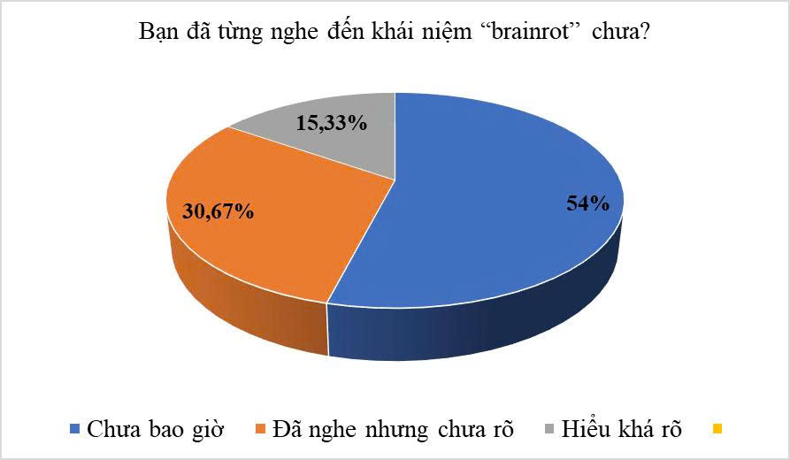

Giải Mã & Tối Ưu Hóa
Sự Tập Trung
Bạn có biết khả năng tập trung của con người đã giảm từ 12s xuống còn 8s? Hãy cùng đo lường và rèn luyện lại não bộ ngay hôm nay.
Cơ Sở Khoa Học
Hiểu rõ cơ chế hoạt động của não bộ là bước đầu tiên để làm chủ sự tập trung.
1. Cạm bẫy Dopamine
Các video ngắn tạo ra những cú "hích" Dopamine liên tục. Não bộ quen với phần thưởng tức thì và lười xử lý thông tin dài.
2. Thùy Trán (PFC)
Vùng não chịu trách nhiệm lập kế hoạch và kiềm chế bị suy yếu kết nối, khiến bạn dễ bốc đồng và khó ngồi yên.
3. Tính dẻo Thần kinh
Tin vui là não bộ có khả năng tái cấu trúc. Nếu bạn rèn luyện đúng cách và "cai nghiện" kỹ thuật số, não bộ sẽ phục hồi.
Dữ Liệu Khảo Sát

Biểu đồ tỉ lệ nhận thức về suy giảm tập trung (N=150)
💡 Con số biết nói:
- 54% học sinh chưa bao giờ nghe đến khái niệm suy giảm tập trung dù đang mắc phải.
- Thời gian trung bình sử dụng MXH: 3.5 giờ/ngày.
Câu hỏi...
Kết quả
Phòng Lab: Đo Phản Xạ Thần Kinh
Bài Test Stroop
Đo lường độ trễ khi não xử lý thông tin xung đột.
Nhiệm vụ: Chọn MÀU MỰC của chữ (Đừng đọc chữ!)
Tốc độ trung bình
Trạm Sóng Não
Kích hoạt trạng thái tập trung sâu (Deep Work) bằng âm thanh Binaural Beats. Hãy đeo tai nghe để có trải nghiệm tốt nhất.
Nghiên cứu & Báo chí
National Geographic: Brain Plasticity
Báo cáo về việc cấu trúc não bộ thay đổi tiêu cực khi tiếp xúc quá nhiều với nội dung kém chất lượng.
Đọc bài báo gốcNghiên cứu SSRN (2025)
Tác động của thiết bị kỹ thuật số đến sức khỏe tâm thần và hiện tượng "Brainrot" ở sinh viên.
Xem tài liệu gốcQuan điểm chuyên gia
"Sự gia tăng của hội chứng giảm chú ý là thách thức nhận thức lớn nhất thế kỷ 21. Chúng ta cần các can thiệp kỹ thuật và giáo dục để bảo vệ não bộ thế hệ trẻ khỏi sự lệ thuộc vào thuật toán."
Tiến sĩ Sarah Johnson
Viện Khoa học Nhận thức & Hành vi
Góc Tâm Sự Học Sinh
Những chia sẻ thật từ các bạn đã tham gia thử thách "Cai nghiện Dopamine".
"Mình đã giảm 2 tiếng lướt TikTok mỗi ngày. Ban đầu bứt rứt lắm, nhưng giờ đọc sách thấy 'vào' hơn hẳn!"
"Trước đây điện thoại là vật bất ly thân. Giờ mình thử để nó ở phòng khác khi học, hiệu quả bất ngờ."
"Video ngắn vui thật đấy nhưng xem xong thấy đầu óc trống rỗng. Mình quyết định cai nghiện để thi cấp 3 tốt hơn."
Góc Rèn Luyện Não Bộ
Vừa chơi vừa học: Kích thích trí nhớ ngắn hạn và tư duy logic.
Kế Hoạch Hành Động 7 Ngày
Đừng chỉ đọc, hãy hành động! Tải xuống lộ trình chi tiết để "Detox" kỹ thuật số.
Tải Phác Đồ Điều Trị (Word)